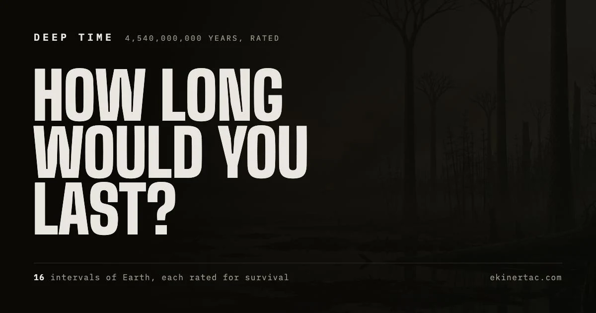
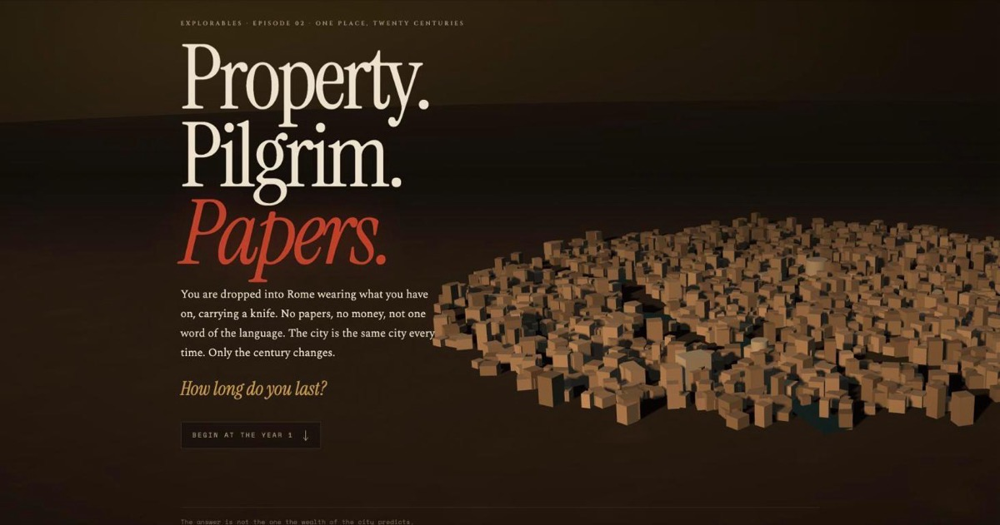

-
-

Property. Pilgrim. Papers.
How long you last in Rome, century by century, arriving with nothing. Survival does not track how rich the city is. It tracks whether the city has a category for you, and Rome at a million people will own you while Rome at seventeen thousand will feed you.
Open